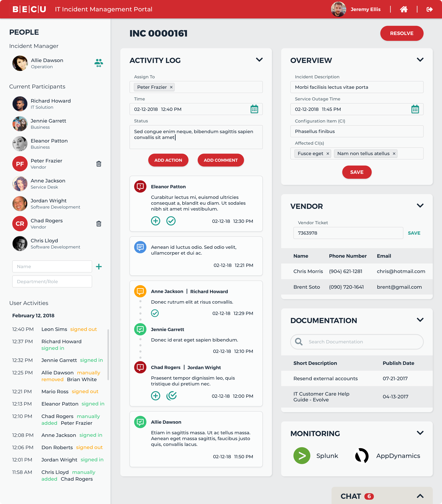

BECU is a credit union originally established to serve employees of The Boeing Company. BECU was founded as Fellowship Credit
Union in 1935 by 18 Boeing employees, and was named Boeing Employees' Credit Union for much of its
history. Its headquarters are located in Tukwila, Washington. As of September 30, 2017, BECU had
over $17.5 billion in assets and over 1.06 million members, making it the largest credit union in
Washington and fourth largest in the United States.
Project Overview
The Problem
BECU has grown significantly over the last decade, and continues to experience about 10% year-over-year-growth. BECU has
outgrown its current incident management tools and needs a new system to help staff quickly and effectively
resolve critical incidents.
The Solution
We created an online portal for the end-to-end management of high and critical technology incidents for BECU IT employees
so that they can work as smartly and quickly as possible to restore services for their members.
The Audience
BECU Employees who will benefit from this project include but not limited to incident managers, on-call team members, problem
managers, and other IT staffs members.
Features
Real-Time Collaborative Dashboard
The biggest challenge for BECU IT incident management team was lack of a collaborative tool dedicated for incident management.
They often had to switch between different systems such as ServiceNow and manage from there.
If an incident manager makes a change in one system, other team members are often not immediately
informed. This of course is not very efficient especially during a high critical incident. Our
software perfectly solves this problem by introducing a real-time collaborative experience. Anyone
who is currently watching or participating an incident will automatically get the most recent
update on the dashboard. This saves incident managers a large amount of time by not having them
to call or email their team members about the update.
Integration with Existing Systems
Creating a completely new software from scratch is easier than building a software that integrates with currently existing
systems, because integration often limits developers to certain technologies and requires them
to spend time learning existing tools first. For this project, there are two major integrations:
integration with ServiceNow for data fetching, manipulation, and storage; integration with Azure
AD for user authentication and authorization.

User-Friendly Design
Guiding by the philosophy of "putting people first," BECU cares deeply about their members. We sympathize with it. We want
to design and build a people-oriented product that empowers all IT employees at BECU to handle
critical technology incidents quickly and painlessly. While BECU makes it a priority to listen
to the members, we want to make an effort to hear from IT employees themselves to understand
their pain points and gather valuable ideas. We always think from users’ perspectives and strive
to help.
Components
People
An incident manager sometimes wants to see who is currently participating in an incident. A participant can be an on-call
team member or a vendor. Current participants can search other users and are eligible for manually
adding users as participants. To help incident managers save time manually adding and removing
participants, the portal is smart enough to automatically add users when they click into an incident
view or remove them from current participant list when they leave the incident view. To help
incident managers obtain absolute control and analyze participant contributions, user activities
are also tracked. Sometimes an incident manager might leave for a different incident or for other
reasons. The portal also supports to switch between incident managers.
Activity Log
One of the most important components to BECU incident management team is activity log. This is where they keep track of progress
and record any significant update to an incident. The portal allows any incident participants
to add, delete, and edit activity logs.
Overview
Participants can find basic information about an incident in overview component. They are also allowed to modify incident
information directly on the portal. Modified fields will also be updated in ServiceNow in real-time.
Chat
To facilitate communication, the portal also comes with a mini chat widget. When it is hidden, the chat widget will notify
users by displaying total number of unread messages.
Vendor
Sometimes incident managers and on-call team members need to consult vendors to understand configuration items and fix defects.
The portal will automatically pull vendor contact information from relevant database when a configuration
item is added or updated.
Documentation
To help BECU IT staffs better understand problems and relevant configuration items, the portal allows them search documentations
from existing knowledge base.
Resolve
Incident managers no longer need to switch back to ServiceNow to resolve and close a high critical incident ticket. They
can do this in the portal. Just fill out all required fields and click resolve button. This ticket
will be automatically marked as resolved state in ServiceNow.